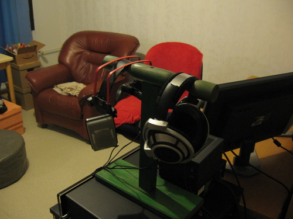
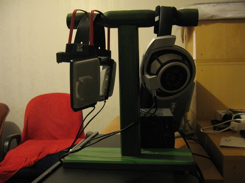

Sennheiser HD800 ja AKG K1000
Lainasin Sennheiserin nykyisiä lippulaivakuulokkeita, eli HD800:tta, testatakseni hieman niitä K1000:ttani vastaan. Senkkujen vahvistuksesta huolehtii Musical Fidelity X-Can V3.
Noin viikko sitten sain postistani haettua tarvittavat vermeet ja aloin kuunnella. Nämä seitsemän päivää olivat senkkujen yksinoikeutta, jonka jälkeen palaan – nyt – K1000:een ja teen käänteisiä havaintoja. Paras tapa analysoida eroja pitkäaikaiskäytössä!

HD650 on Steroids
Sennheiserin dynaamiset lippulaivamallit ovat aina olleet verraten uniikkeja ja mielenkiintoisia tuotteita oudolla tavalla. Ensin HD650 ja nyt HD800 omaavat kumpikin sitä kuuluisaa Sennheiserin verhoa, joka tuntuu peittävän osan keskialueesta ylöspäin. Onko sitä sitten olemassa, tai onko hienoinen vaimenema sitten mistä kiinni, siellä se on ja pysyy. Psykoakustiikka, hieno asia sinänsä, takaa uskolliselle kuuntelijalle tottumisen tähän verhoon parin päivän perästä ja pian kaikki taas kuulostaa ihanan luonnolliselta. Erityisesti HD650 kärsi tästä verhosta (joskin vahvistuskin oli tällöin aika huono) ja mikä se iso etu tästä on, niin se tasoittaa pikkiriikkisen eri levyjen masteroinneista johtuvia säröeroja ja tuottaa vähemmän kuunteluväsymystä.
Tämä kaikki tarina siksi, kun ensivaikutelmissa HD800 tuotti mieleen pitkälti HD650:n, joka minulla oli ollut reilun vuoden (?!) pari vuotta sitten.
Mitä muuta ensivaikutelmista? No verhoista [tai vaimentuneesta yläpäästä (tämä on HD650:n ongelmia)] huolimatta detaljia puskee paljon. HD800 tarjoaa paljon hyviä käsiä huonoillakin pelikorteilla. Ehkä se vain johtuu siitä, kun käytän K1000:ttani ääriasennossa, jossa osa hiljaisemmista detaljeista on kai tuomittu kuolemaan. En välttämättä allekirjoittaisi sitä väittämää. Voihan hyvin olla, että K1000 ei ole detaljikas kuulokepari. Ei ole iso miinus kaikkien niiden plussien rinnalla. K1000:n jälkeen tuli ihmeteltyä myös huiman suurta kanavaerottelua, mutta sepä tulee luonnostaan kun kupit ovat kohtuullisen suljetut. Ei luonnollista crossfeediä. Keskimäärin työt kuulostivat hieman etäisemmiltä Senkuilla, ja se on kai pantavissa puutteelliseen vahvistukseen tai muuten vain lievästi vaimentuneeseen diskanttiin / verhoon. David Bowien Starman esimerkiksi kärsi tässä esityksessä jonkin verran.
HD800 alun jälkeen
Viikon aikana ehti tottua verhoon ja kaikki alkoi kuulostaa normaalilta. Psykoakustiikka teki tehtävänsä. Erityisesti panin merkille hulvattoman hyvän stereokuvan ja levittyvän äänen, joka melkein lähentelee K1000:n vastaavaa. Hyvä saavutus saksmanneilta!
Kuulokkeiden potentiaalista alkaa olla jonkinlaista kuvaa. Annettaisiinpa HD800:lle parasta vahvistusta ja luonnollisinta signaalia, niin johan poika kylpisi loistossa. Toisin kuin HD650:n tapauksessa, en ole lainkaan vakuuttunut HD800:n helposta ajettavuudesta. MuFi X-Can V3 menee säröiksi aivan liian aikaisin. Jahka opettelin kuuntelemaan tavanomaista hiljaisemmalla, alkoivat kaikki taiat aueta.
Dynamiikkaa ei HD800:sta lähtenyt tällä vahvistuksella koskaan tarpeeksi. Pelikäytössä huomasi kiusallisen hyvin, mutta kyllähän tuo musiikistakin terävimmän kärjen imaisee.

Ja takaisin kotiin
Paluu AKG:hen tuo kaiken hyvä takaisin, mutta aivan kuin kaikki ei olisi ennallaan? Paha sanoa, mutta heti makusteltuani päästiin niihin Wow-elämyksiin, joita en yllättäen Senkuilla saanut. Se ylin piikki diskantissa kai teettää mukavia hetkiä korvaluussa.
K1000 on kevytääninen ja upearakenteinen, puhumattakaan ulkonäöstä ja tyylistä. Helppoajoinen ja kestävä värkki. Puutteisiin voi laskea ikävät resonaatiot silloin tällöin ja paikoin hienojakoisesta resonaatiosta johtuvan metallisen diskantin. Siihenkin tottuu, kuten Senkkujen verhoon.
Muoto- ja makuseikat
Sennheiser HD800 on umpiruma muovikuuloke myös livenä. Massiivinen rengastyyny muutenkin suuri läsnäolo päässäollessaan häiritsee jonkin verran.
HD650 oli aikoinaan muotoilultaan ja hillityllä tyylillään sekä kauneinta että hyvä-äänisintä, mitä kohtuurahalla saa. Sääli vain, että jopa siinä mallissa mentiin vähän mönkään HD600:hen nähden, kun kuppeja pitävää pantaa kallistettiin kuppien B-akselin suhteen. Sillä ratkaisulla saadaan hieno kuuloke, joka painaa leukaluuta. Jos olisivat pitäytyneet HD600:n suorassa linjassa, niin olisi saatu hieno halausote helpolla säädeltävyydellä.
Miten asettelisin HD800:n? Kyse on makuasioista ja todennäköisesti laitteistostakin kiinni. Pidän oikein hyvänä sitä, että korvan ympärys hengittää äänen ohella. Elokuvakäyttöön HD650 ja musiikille K1000. Minun tapauksessani HD800 on väliinputoaja, mutta vain koska K1000 tuli minulle ensin.